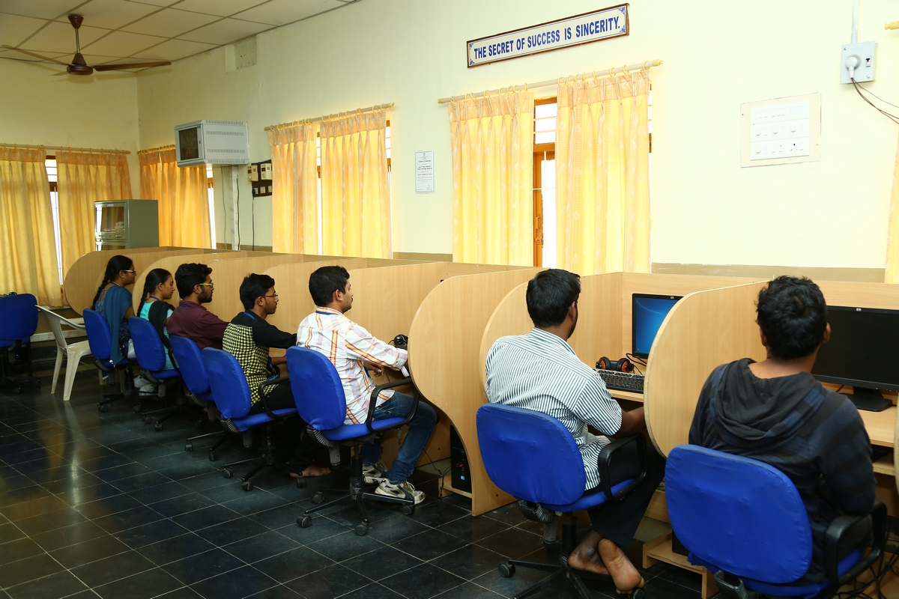
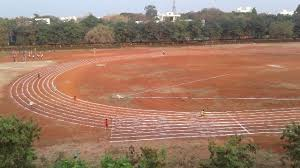

Academics at Prasad V Potluri Siddhartha Institute of Technology
At PVPSIT, we provide a comprehensive academic experience to our students. Our courses are designed to equip students with theoretical knowledge and practical skills to succeed in their chosen fields. Along with the academic curriculum, we also provide excellent infrastructure, labs, and opportunities for extracurricular activities.
Labs and Research Facilities
Our campus is equipped with state-of-the-art laboratories and research facilities that help students gain hands-on experience in their respective fields. Some of the key labs include:
- Computer Science Labs: Equipped with the latest software and hardware for programming, networking, and software development.
- Electronics Labs: Designed for practical work in electronics circuits, microprocessors, and communication systems.
- Mechanical Engineering Labs: Well-equipped with machinery and tools for mechanical design and manufacturing processes.
- Civil Engineering Labs: For testing materials, surveying, and construction practices.
- Electrical Engineering Labs: For hands-on work in electrical circuits, power systems, and control systems.
- Project Labs: A place for interdisciplinary projects where students can experiment and innovate with ideas from various fields.

These labs are not just about academic learning but also encourage innovation and research through student projects, workshops, and internships.
Sports and Extracurricular Activities
We believe in the overall development of our students, which is why sports and extracurricular activities are an integral part of the PVPSIT experience.
- Indoor Sports: The campus has facilities for indoor sports like table tennis, chess, carom, and badminton.
- Outdoor Sports: A well-maintained sports ground for outdoor sports like cricket, football, basketball, and volleyball.
- Annual Sports Meet: PVPSIT organizes an annual sports meet where students participate in various athletic events, fostering a spirit of teamwork and healthy competition.
- Cultural Events: Students also engage in a variety of cultural activities like music, dance, drama, and debates through various clubs and societies.
- Clubs and Societies: Students can join clubs related to music, photography, drama, and more to hone their skills and interests beyond academics.

Our sports and extracurricular activities aim to nurture students' leadership, teamwork, and time management skills while promoting physical fitness and mental well-being.
Results
For the latest academic results and updates, you can access the results through the following link:
Placements and Internships
PVPSIT has a robust placement cell dedicated to helping students secure internships and full-time positions with top companies across industries. The placement process is structured and prepares students with the skills they need to succeed in the professional world.
Placements
Our placement cell works relentlessly to provide excellent placement opportunities. Over the years, numerous reputed companies have visited our campus for recruitment, offering lucrative salaries and career opportunities.
- Top Recruiters: Companies like TCS, Infosys, Cognizant, Wipro, Tech Mahindra, Accenture, and many more regularly visit our campus for placements.
- Placement Statistics: Over 90% of our students get placed in top-tier companies, and many students secure positions in core technical fields.
- Internships: We provide internships in collaboration with top companies, allowing students to gain real-world experience and build their resumes.
- Training and Career Counseling: The placement cell provides extensive training in communication, soft skills, resume building, mock interviews, and other career guidance programs.
Placement Highlights:
- Highest salary offered: ₹44 LPA (Amazon)
- Average salary offered: ₹6-7 LPA
- Internships with top companies and startups
- Regular placement drives and company visits
PVPSIT students are well-equipped to face the challenges of the industry, thanks to the rigorous academic curriculum, research opportunities, extracurricular activities, and the strong placement support system.